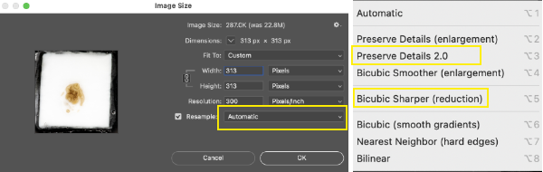
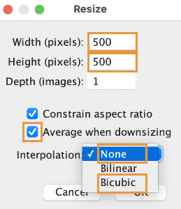

Resizing and reducing/画像の縮小と軽量化
(This page is still in Japanease only.)
アプリケーション
下記のどれか使います。
- Adobe Photoshop, Action and Batch.
- ImageJ/FIJI, Macro
Photoshopのアクション・自動処理・バッチでは、複雑な操作も記録できます。ImageJ/FIJIでもMacroを使ってできますが、記録できることがPhotoshopよりも少ない感じです。もしかしたら、熟達者ならPhotoshop相当に複雑に記録できるのかもしれませんが、よくわかりませんでした。MacのM1 maxは、Photoshop(v23.2.1 M1ネイティブ、macOS12.2.1、MBP16-2021、2022-3-14メモ）のバッチでマルチスレッドに対応していません。処理が何倍も遅くなるので、現状では、M1シリーズでは、FIJIをおすすめします。
縮小の計画
縮小の目的は、ズレ補正用の軽い連続画像をつくること、および、3D用のグレースケール画像も作ることです。ついでにピクセルサイズをキリの良い数値にして整理整頓、作業しやすくしています。
一例、「Nikon D810でおおよそ1倍、フルサイズ撮影した。スケールを確認すると4.88µm/pixelだった」
| µm/pixel | pixels | ||
|---|---|---|---|
| 元画像 | 4.88 | 7360×4912 | color |
| 縮小1 | 5 | 7183x4794 | color, gray |
| 縮小2 | 10 | 3592x2397 | color, gray |
| 縮小3 | 20 | 1795x1199 | color, gray |
| 縮小4 | 40 | 898x599 | color, gray |
この例では、4通りの縮小連続画像をつくることになります。ズレ補正で扱える1000x1000以下の軽いシリーズができるまで、縮小します。実際は、縮小の前にクロップすることが多いので、これらより小さな画像を扱っています。例のように縮小が4通りにもなることは稀で、通常は2通りか3通りです。クロップでは、標本ブロックの外周が残るようにします。
それぞれの縮小連続画像で、カラーもグレースケールも作ることが多いです。利用目的としては、カラーシリーズは、MPRや、Segmentationに使い、グレースケールは、主にVolume Renderingに使います。グレースケールは軽いのが理由で、重い作業（ImageStabilizerやSegmentation）に使うこともあります。
Photoshop 2通り、ImageJ 1通りの、計3通り記します。どれかで行います。WindowsOSの拡張機能や、macOSのAutomator.appを利用した方法もありますが、圧縮率や補完法の選択ができないようで、検証をすすめていません。
縮小_Photoshop, Action, Batch処理
Photoshopの準備として、縮小時のアルゴリズムを固定しておくと安心です。Preference>General>Image Interporation>Bicubic sharper(best for reduction)にしておけます（反映されない？かもしれないので、実行前に要確認）。また、ホーム画面を開かないようにしたほうがActionの操作で都合が良いです。Preference>General> Uncheck Auto show the Home Screen。チェックを外しておきます。デフォルトではホームページが開くようになっており、ActionにClose windowを記録すると、Actionを含めたすべてのウィンドウが表示されなくなってしまい、不便です。ActionのBatchにおいて、MacBookPro-2021 M1 maxは、MacBookPro-2018 i9よりも、処理が倍ほど遅いです。CPU usageをながめると、どうやらマルチタスクにならないようです。対策は分からず、PhotoshopのGPU処理をON/OFFしても変わりませんでした。
- スケール画像で、ピクセルサイズを計算する。Refering to the scale image taken beforehand, caliculate the pixel size of the original blockface image in micrometer/pixel.
- 縮小させる計画をたて、1のピクセルサイズを参考に縮小後の画像サイズを計算しておく。ピクセルサイズが、きりの良い数字になるように縮小している（のちの3Dイメージングに便利）。最小は一片500pixel程度になるように計画する（のちのズレ補正では、軽い画像シリーズから試す）。のちのズレ補正に Cariculate the reduced image size to make 5, 10, 20, or 40 µm/pixel image series.
- 新規フォルダを必要数作成する。縮小した画像シリーズを保存するため。
-
Actionに記録する。作業ウィンドウが出ていなければ、Window>actionで表示させる。新規アクションを白い紙のマークで新規アクションを作成する。名称はデフォルトでも変更しても、あとで利用するときに分かれば良い。記録が始まっていれば、赤い丸が表示されている。記録できるのは、画像縮小1種目、別名保存、グレースケール、別名保存、もとに戻す、画像縮小2種目、閉じるなど、さまざま。記録を停止するときは、四角ボタン。- 画像縮小1
Image>Image Size...Resamplingモードは、Preserve Details 2.0またはBicubic Sharper (reduction)を選ぶ。

- 別名保存（カラー画像、JPEGなら圧縮率
10。TIFFでもよいがデータ量が多いのでディスクに十分な空きを。） - グレースケールへ変換。
Image>Mode>Grayscale - 別名保存（グレースケール画像）
- 画像縮小2（縮小1と同様に、Image Size、別名保存、Grayscale、別名保存）
- アクションを停止する
四角ボタン。
- 画像縮小1
-
いざ連続画像を一括して縮小。
File>Automate>Batch...記録したアクションと、実行させたい連続画像入りフォルダを指定し、実行する。
縮小_Photoshop, Droplet機能
Batchとは別に、Dropletというやり方もあります。記録したアクションをドロップレットファイルとして保存して、画像のサムネイルにドラッグします。結果は同じです。Dropletは、単にアクションを保存しておく目的でも使えます。別の実験で同一処理をかけたいときや、別の人のコンピュータで同一処理をしたいときに利用できるでしょう。
- （上記のアクションを記録するところまでは同じ）
- 作ったアクションをファイルとして保存する
File>Automate>Create Droplet… - Save Droplet In,
Choose...より、保存先と名称を指定する - Play, Set:, Action: 作ったアクションが指定されているか確認し、
OK- 拡張子
.appのdropletファイルが指定した場所にできる - 処理したい連続画像が入ったフォルダを、ドラッグして、ドロップレットファイルに重ねる（アイコンに重ねる）
ヒント
保存先までアクションに入れておくと、特定のフォルダに縮小後ファイルが保存されます。もし、別の実験で同一処理をかけたいときは、別の保存先に変更したいところです。そんなときは、作ったアクションの中の、保存先を指定した一行を削除し、新しい保存先を追記録します。改訂したアクションからDropletをあらためて作ります。
縮小_ImageJ/FIJI
FIJI/ImageJは、まえもって基本設定しておきます。大まかな手順として、操作の記録（Plugins> Macros）と、連続画像の処理（Process>Batch）があります。
- （準備、済んでいれば改めては不要です）ImageJ/FIJIが利用するメモリ量を決める。搭載メモリの75%が推奨最大値。
Edit>Options>Memory & Threads...>Maximum Memory。MBで入力、余裕を持って75%より少なめで使っている。64GBなら42GB（42000 MB）など。入力後、いちどImageJ/FIJIを再起動する - （準備、済んでいれば改めては不要です）JPEGの圧縮率を決めておく。
Edit>Options>Input/Output...>JPEG quality (0-100)。100をおすすめします。CoMBIの連続画像の場合、データ量はTIFF比較（フォルダの容量）で95で6%へ、100で12%へと減少し、画質は遜色ないかなといった程度です。デフォルトの85では、データ量が2.5%へとかなり減少しますが、画質はかなり低下します - （準備）スケール画像を参照して、ピクセルサイズ（µm/pixel）を計算する。
- （準備）縮小させる計画をたて、先のピクセルサイズを参考に縮小後のピクセル数（画像サイズ）を計算しておく。ピクセルサイズが、きりの良い数字になるように縮小している。例えば、5, 10, 20, or 40 µm/pixelの画像シリーズ。管理上便利だかです。最も縮小するシリーズは、一辺が500pixel程度になるようにしたい。のちのズレ補正をスムースに実行できるように。いくつものシリーズを作るときは、各シリーズ個別にマクロを記録するのがいいようです。
- （準備）処理後の保存先フォルダを新規につくっておく。
- 一枚だけ画像を開く
- Macroの記録開始。
Plugins>Macros>Recordウィンドウ「Recorder」（デフォルトでMacro.ijm.ijmとなっている。名称を変更してもよい。） - 縮小する
Image>Adjust>Size. 上記で計算しておいたピクセル数（画像サイズ）を入力する。Aspect retioを保つにチェックしてあれば、一辺の入力で済む。Interpolationモードは、Noneを推奨する（Bicubicでも悪くないが、NoneのほうがTIFFに近く、シャープに仕上がる）。チェックボタンAverage when reductionには、チェックを入れておく。 - 切り抜く（ブロック周囲がちょうど含まれる画像にしたい。すでに切り抜いてある場合は不要です。）
- メニューバーの左端、四角いアイコンを使って、切り抜きたい領域を選択します。
- 切り抜きます。
Image>Crop
- マクロファイル（.ijm）を保存します。
Createボタン。別ウィンドウ「Macro.ijm.ijm」が開く。（名称変更していれば、その名称が表示される） - その別ウィンドウ「Macro.ijm.ijm」がアクティブな状態で、
File>Save as。名前を決めて、拡張子.ijmのファイルを保存する。 -
画像を閉じる（保存する必要はない）。別ウィンドウ「Macro.ijm.ijm」も「Recorder」も閉じる。
-
いざMacroを実行し、連続画像を一括縮小します。
Process>Batch>Macro...ウィンドウ「Batch Process」が開かれる。 Input,Output入力フォルダ（元画像連続JPEG）と出力フォルダ（新規フォルダ、空、保存先）を指定。（ヒント：前もって出力フォルダを作っておくこと）Open保存しておいたマクロファイル（.ijm）を指定し、読み込むProcessボタン
マクロファイル（拡張子ijm）の例
画像サイズを600x450にして、指定の座標でCrop 切り抜きすると、下記のようなマクロファイル（.ijm）ができます。マクロファイルには開くや、閉じる、保存は記録不要で、それらは実行時に指定します。ここで例示したサイズ縮小や切り抜き以外にも、Grayscale変換なども記録して、CoMBI連続画像を処理できます。
run("Size...", "width=600 height=450 constrain average interpolation=None");
makeRectangle(181, 96, 278, 278);
run("Crop");
上記の例では、「縮小＋切り抜き」でブロック周囲をぴったり含む画像にしましたが、もしRAW-JPEG変換時にすでに切り抜いている場合は、ImageJマクロでの「切り抜き（makeRectangleやCrop）」は不要です。その場合、下記のようなシンプルなマクロになります。これなら、Batchに手入力してもよさそうです。
run("Size...", "width=600 height=450 constrain average interpolation=None");
ヒント
- Macro記録では、ファイルの「開く」、「閉じる」、「保存」は、不要です。一括処理を実行するときに保存先を指定できます。Photoshopとは異なるところです。
- ImageJ Macroでは、別名保存を細かく設定できませんでした。作りたい画像シリーズが何個もある場合、（たとえば、5 µm/pixel series, 10 µm/pixel series, color series, grayscale series）、別々のマクロを組んだほうがいいようです。Photoshopの場合、別名保存もふくめ、複雑な作業を全部記録してくれます。
- メモリに展開できる画像データの量については、別のページ、「コンピュータと画像ファイル」へ
- 画像を縮小してJPEGを使っていると、ぼやけが許容できないくらいになるかもしれません。データ量の節約のためにJPEGを使いますが、縮小画像になれば、TIFFにして画質が良いままで扱うのもおすすめです。TIFF連続画像が読み込める3D再構築アプリは、3D slicerです。Icyはmulti-TIFF。HorosはTIFFを読み込めません。
- 参考書：ImageJではじめる生物画像解析（学研メディカル秀潤社、2016）
軽量化_枚数を減らす
連続画像を1つ飛びにすれば、容量が半分になる。薄く切りすぎて、枚数が増えすぎたとき。解析にはそんなに枚数はいらないとき。3D解析で軽くしたいとき。 MacではFinder、WindowsではExploreで操作します。
Macの場合：
- 連続画像を複製する。フォルダ上で右クリック、
Duplicate - 複製したフォルダを
Finderで表示し、タテに細長く表示する。Show items as icons, Sort byname。ファイル名で並べ替えをする。 - 2列になるように、Finderの表示幅を調整する。
- マウス・トラックパッドをつかって、片方の列のファイルだけ選択する。
- 右クリックで、
New Folder with Selection、フォルダに名前をつけて管理する。（または、選択ファイルを削除して、残りを使用するのでもかまいません） 同様に、3列になるように表示して、1列だけを選択すれば2つ飛ばしのシリーズ（枚数3分の1）を作れます。
Windowsの場合：
- 連続画像を複製する。フォルダ上で右クリック、
Copy&Paste。 - 複製したフォルダを開いて、アイコン表示にする（大、中、小アイコン、どれでも）
- ウィンドウの幅を狭くして、2列で表示する。
- 片方の列のファイルだけ選択する。
- 選択したファイルを削除。（複製フォルダ内であること。元の連続画像とは別であること）
- 残ったほうを1つ飛ばしの連続画像として使用できます。
連続画像のファイル名一括変換
CoMBIの撮影が通常に成功した場合は、必要ありません。ファイル名が9999から0001に戻ったとか、特別な事情があるときに、ファイル名を一括で連番へと変換します。連番の必要性はアプリによって異なりますが、全過程のどこかで連番が必要でしょうから、どこかで施します。変換後に、元データの元名称がなくなってしまう場合、元データとの照合（実験の再現性）ができるように、メモを残してください。
- Photoshopによる連続画像処理では、フォルダ内にあれば一括して処理してくれますので、連番は必要ありません。
- ImageJのImage Stabilizerでは、頭に連番が必要です。
- 3D slicerでは、完全な連番が必要です。連番のうしろに残しておいた元ファイル名が飛び飛びの場合、連続画像とは認識されません。完全な連番にしたとき、元データとの照合（実験の再現性）ができるように、メモを残してください。
- Horosの場合、頭に連番さえあれば、連続画像として認識してくれます。
| 変換前 | 3Dslicer用の良い例 | 3Dslicerではダメで Horos, ImageJでは良い例 |
|---|---|---|
| DSC_9997.jpg | 0001.jpg | 0001_DSC_9997.jpg |
| DSC_9998.jpg | 0002.jpg | 0002_DSC_9998.jpg |
| DSC_9999.jpg | 0003.jpg | 0003_DSC_9999.jpg |
| DSC_0001.jpg | 0004.jpg | 0004_DSC_0001.jpg |
| DSC_0002.jpg | 0005.jpg | 0005_DSC_0002.jpg |
| DSC_0003.jpg | 0006.jpg | 0006_DSC_0003.jpg |
Windows OSで一括変換
Exploreで複数選択名称変更すると、「入力文字(1).jpg」と、カッコつき連番数字になる。元のファイル名は残らないので注意。
Mac OSで一括変換
Finderで、複数選択- 右クリック（副メニュー）
Right click, sub-menuより、ファイル名を変更Rename。完全変更や連番追記など、ある程度カスタマイズできる。プルダウンメニューのFormat, 次のプルダウン、Name and Counterを使う。
Adobe Bridge（有料アプリ）で一括変換
- Bridge内で、変換したいファイルをすべて選んぶ
Tool,Batch Rename- かなり、細かく設定ができる。